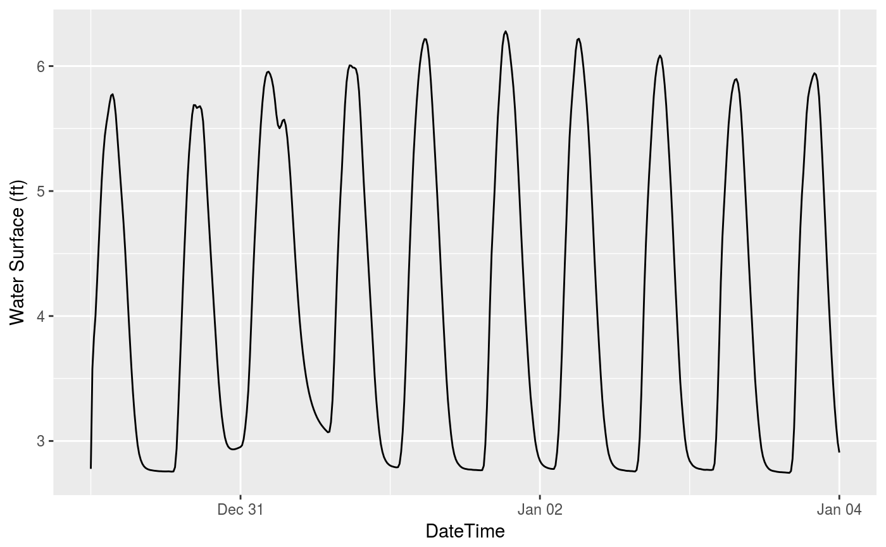
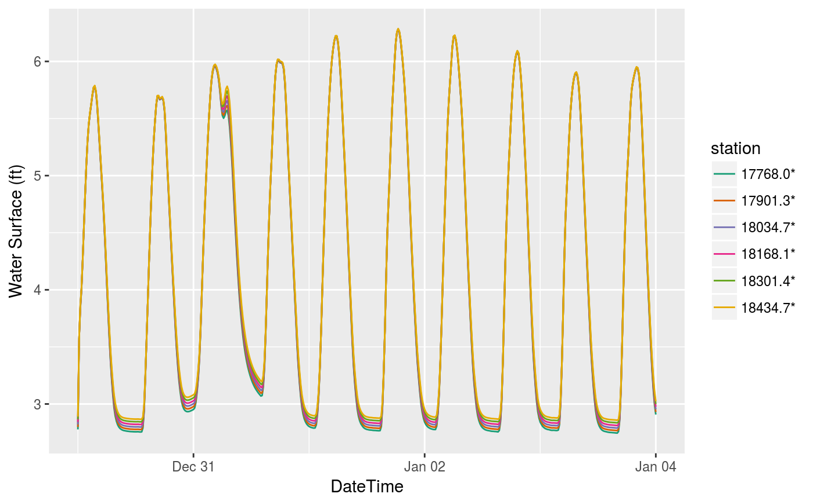
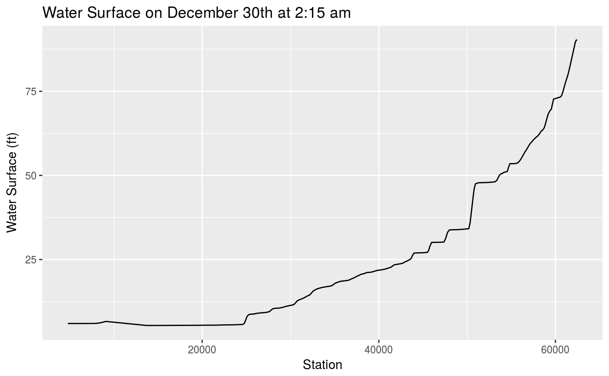
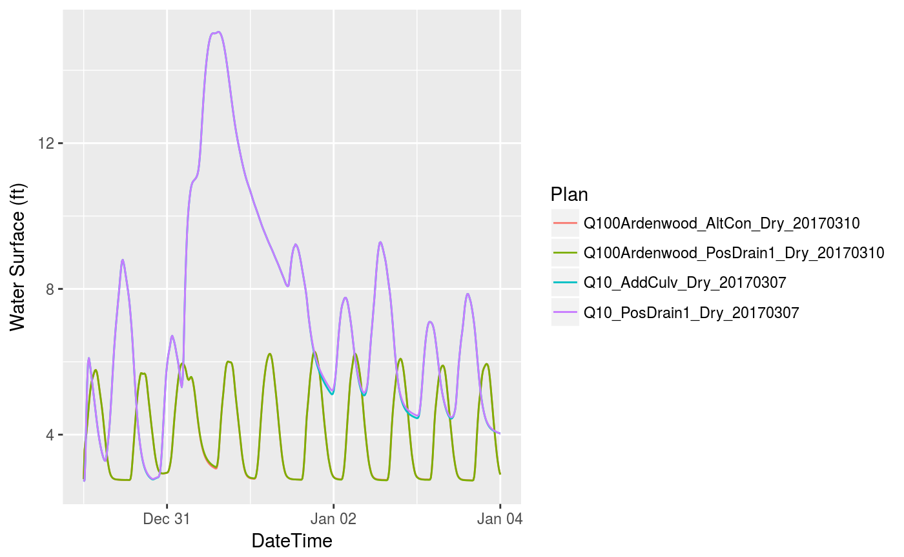
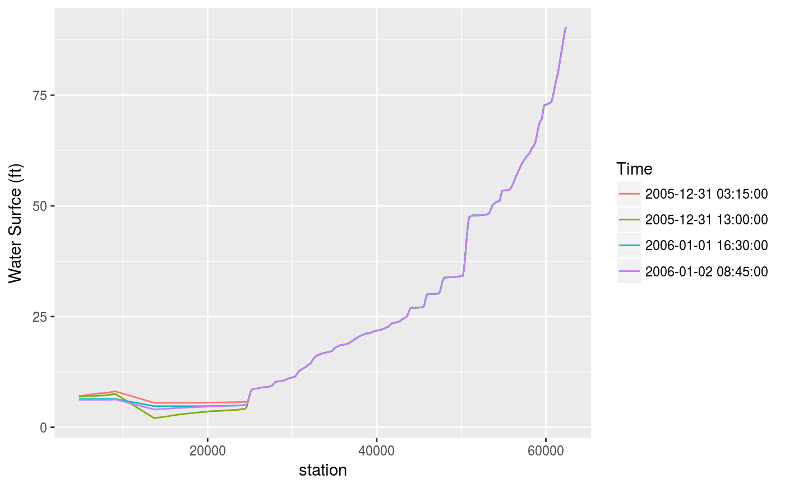
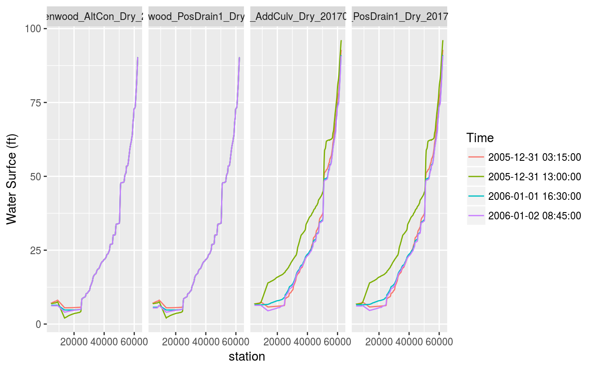

This article outlines several recipes for creating complex queries using hecr. We also outline several solutions for automation. Files resulting from HEC-RAS model run are big, from our work these are usually around ~200mb, these examples use a real output from a model, but packaging this with the package is too big. …. blah blah blah.
Here we read in the model using the hec_file function.
# devtools::install_github("flowwest/hecr")
library(hecr)
model_data <- hec_file("~/Documents/ardenwood/ArdenwoodCreek.p02.hdf")Right away we can get some information,
## A hec object----
## Plan File: ArdenwoodCreek.p02
## Plan Name: Q100Ardenwood_AltCon_Dry_20170310
## Geom Name: ArdenwoodCreek.g08
## Out Inteval: 15MINWe can access attributes relating to the model directly
This section shows solutions for one dimensional queries.
hecr allows user to query a vector of all defined cross sections. These are represented by a numeric value, indicating distance from an origin.
## [1] 319## [1] "9078.845" "8827.918" "8734.11*" "8633.985" "8477.167" "8266.646"HEC-RAS mode results output a set of time series, we can list the available datasets using hec_datasets. Note this does not return any data, simply avaialble data to query on.
## Results/Unsteady/Output/Output Blocks/Base Output/Unsteady Time Series/2D Flow Areas/Ardenwood## One Dim ------
## name dim
## 1 Flow 319 x 481
## 2 Flow Lateral 319 x 481
## 3 Velocity Channel 319 x 481
## 4 Velocity Total 319 x 481
## 5 Water Surface 319 x 481The print function for hec_datasets shows the name of the dataset, as well as the dimension. A user can access the full representation from hdf5r with,
## name link.type object.type object.num_attrs
## 1 Flow H5L_TYPE_HARD H5O_TYPE_DATASET 3
## 2 Flow Lateral H5L_TYPE_HARD H5O_TYPE_DATASET 1
## 3 Velocity Channel H5L_TYPE_HARD H5O_TYPE_DATASET 1
## 4 Velocity Total H5L_TYPE_HARD H5O_TYPE_DATASET 1
## 5 Water Surface H5L_TYPE_HARD H5O_TYPE_DATASET 3
## group.nlinks group.mounted dataset.rank dataset.dims dataset.maxdims
## 1 NA NA 2 319 x 481 319 x Inf
## 2 NA NA 2 319 x 481 319 x Inf
## 3 NA NA 2 319 x 481 319 x Inf
## 4 NA NA 2 319 x 481 319 x Inf
## 5 NA NA 2 319 x 481 319 x Inf
## dataset.type_class dataset.space_class committed_type
## 1 H5T_FLOAT H5S_SIMPLE <NA>
## 2 H5T_FLOAT H5S_SIMPLE <NA>
## 3 H5T_FLOAT H5S_SIMPLE <NA>
## 4 H5T_FLOAT H5S_SIMPLE <NA>
## 5 H5T_FLOAT H5S_SIMPLE <NA>We can now perform a basic query by the pieces explored above.
## # A tibble: 481 x 8
## datetime plan_id plan_name plan_file cross_section_r…
## <dttm> <chr> <chr> <chr> <chr>
## 1 2005-12-30 00:00:00 Q100Arden… Q100Ardenwo… Ardenwood… Upstream
## 2 2005-12-30 00:15:00 Q100Arden… Q100Ardenwo… Ardenwood… Upstream
## 3 2005-12-30 00:30:00 Q100Arden… Q100Ardenwo… Ardenwood… Upstream
## 4 2005-12-30 00:45:00 Q100Arden… Q100Ardenwo… Ardenwood… Upstream
## 5 2005-12-30 01:00:00 Q100Arden… Q100Ardenwo… Ardenwood… Upstream
## 6 2005-12-30 01:15:00 Q100Arden… Q100Ardenwo… Ardenwood… Upstream
## 7 2005-12-30 01:30:00 Q100Arden… Q100Ardenwo… Ardenwood… Upstream
## 8 2005-12-30 01:45:00 Q100Arden… Q100Ardenwo… Ardenwood… Upstream
## 9 2005-12-30 02:00:00 Q100Arden… Q100Ardenwo… Ardenwood… Upstream
## 10 2005-12-30 02:15:00 Q100Arden… Q100Ardenwo… Ardenwood… Upstream
## # ... with 471 more rows, and 3 more variables: cross_section_river <chr>,
## # station <chr>, values <dbl>The data returned is a tidy tibble. Here we visualize,
library(ggplot2)
library(dplyr)
data %>%
ggplot(aes(datetime, values)) + geom_line() + labs(y="Water Surface (ft)",
x="DateTime")
We are not limited to one station,
data <-
hec_one(model_data, station_name = cs[295:300], ts_type = "Water Surface")
data %>%
ggplot(aes(datetime, values, color=station)) +
geom_line() +
labs(y="Water Surface (ft)",
x="DateTime") +
scale_color_brewer(palette = "Dark2")
We can fix the timestamp, and query for all stations to get “snapshot” of all the cross sections at a point in time.
data <- hec_one(model_data, station_name = cs,
ts_type = "Water Surface", time_stamp = "2005-12-30 02:15:00")
data %>%
ggplot(aes(readr::parse_number(station), values)) +
geom_line() +
labs(x="Station", y="Water Surface (ft)", title="Water Surface on December 30th at 2:15 am")
In this section we start to explore more advanced queries by integrating the purrr package. We point out limitattion for each of the examples above, and showcase the purrr solution to alleviate.
library(purrr)
plans <- list.files("~/Documents/ardenwood/", full.names = TRUE)
model_collection <- map(plans, hec_file)
print(model_collection) # a list of hec objects## [[1]]
## A hec object----
## Plan File: ArdenwoodCreek.p02
## Plan Name: Q100Ardenwood_AltCon_Dry_20170310
## Geom Name: ArdenwoodCreek.g08
## Out Inteval: 15MIN
##
## [[2]]
## A hec object----
## Plan File: ArdenwoodCreek.p08
## Plan Name: Q100Ardenwood_PosDrain1_Dry_20170310
## Geom Name: ArdenwoodCreek.g12
## Out Inteval: 15MIN
##
## [[3]]
## A hec object----
## Plan File: ArdenwoodCreek.p72
## Plan Name: Q10_PosDrain1_Dry_20170307
## Geom Name: ArdenwoodCreek.g18
## Out Inteval: 15MIN
##
## [[4]]
## A hec object----
## Plan File: ArdenwoodCreek.p84
## Plan Name: Q10_AddCulv_Dry_20170307
## Geom Name: ArdenwoodCreek.g19
## Out Inteval: 15MINFrom now on operations need to act on a list, but this easy using purrr.
Here we use a single station and query it across all these plans, furthermore since we know that the result of hec_one will be a tibble we use the map variant map_df that will return a dataframe composed of each of the calls to hec_one.
collection_data <-
map_df(model_collection, ~hec_one(., station_name = cs[300], ts_type = "Water Surface"))We can plot this,
collection_data %>%
ggplot(aes(datetime, values, color=plan_id)) +
geom_line() +
labs(x="DateTime", y="Water Surface (ft)", color="Plan")
set.seed(3)
# select random datetimes for this example
dts <- sample(collection_data$datetime, 4)
snapshots <-
map_df(dts, ~hec_one(model_data, station_name = cs,
ts_type = "Water Surface", time_stamp = .))And now visualize it,
snapshots %>%
ggplot(aes(readr::parse_number(station), values, color=as.character(datetime))) +
geom_line() +
labs(x="station", y="Water Surfce (ft)", color="Time")
set.seed(3)
# select random datetimes for this example
dts <- sample(collection_data$datetime, 4)
snapshot_collection <-
map_df(model_collection, function(m) {
map_df(dts, ~hec_one(hc=m, station_name = cs, ts_type = "Water Surface", time_stamp = .))
})And now visualize it,
# obviously the plot can be improved but this shows the functionality
snapshot_collection %>%
ggplot(aes(readr::parse_number(station), values, color=as.character(datetime))) +
geom_line() +
facet_grid(. ~ plan_id) +
labs(x="station", y="Water Surfce (ft)", color="Time")